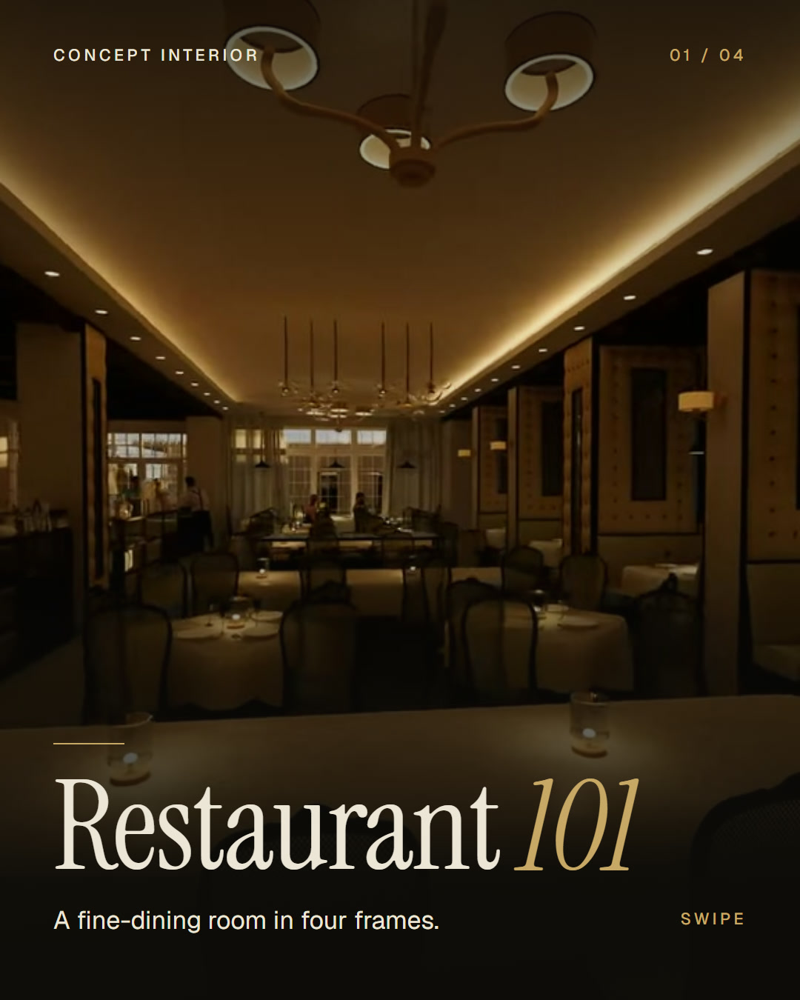
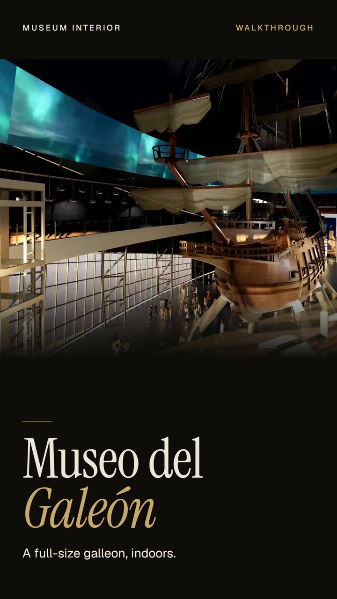
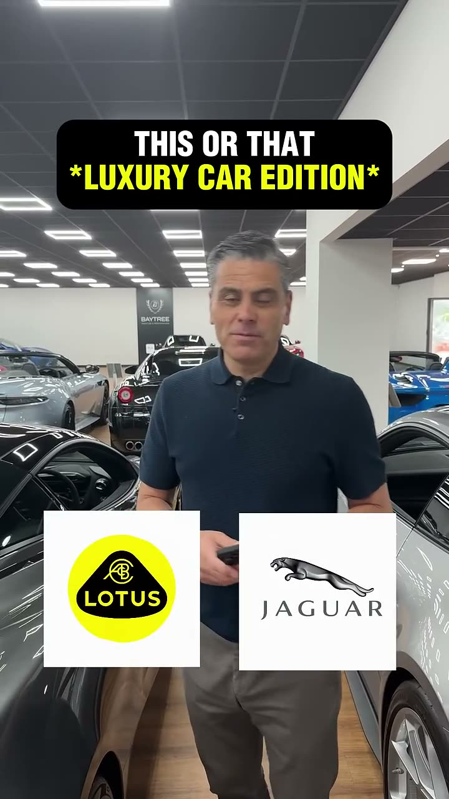
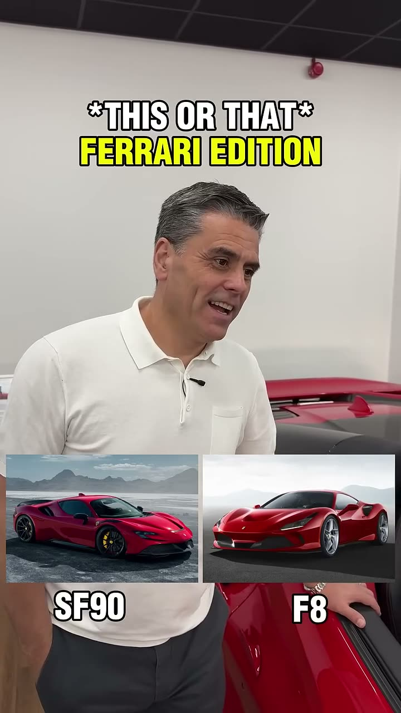
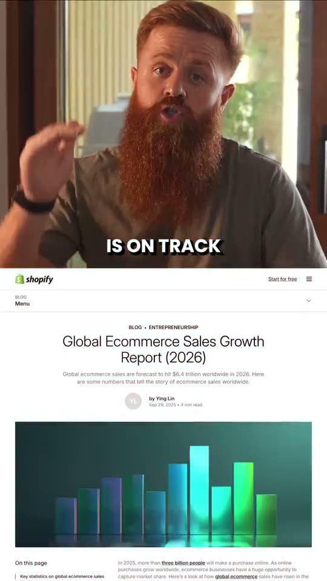
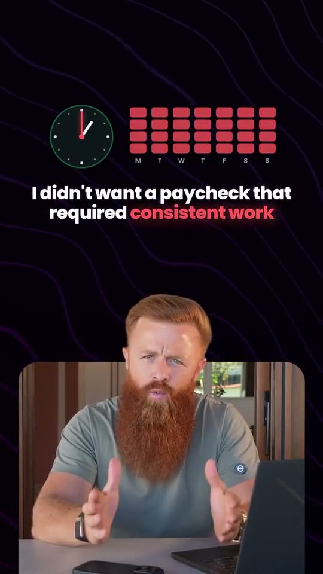
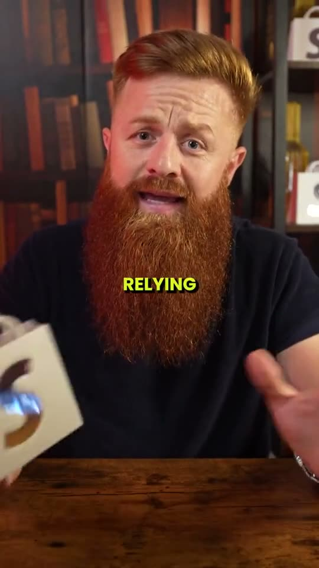
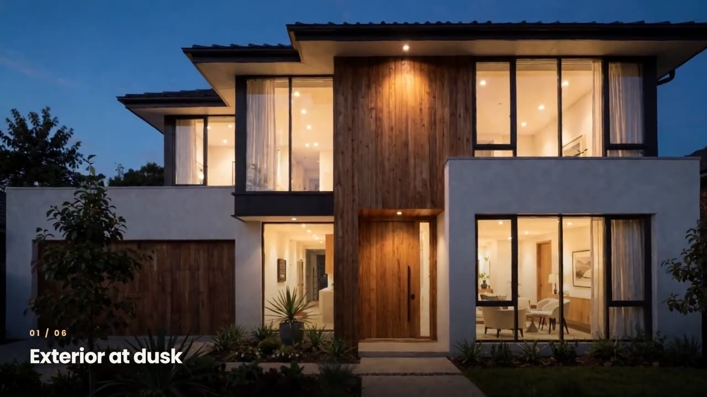
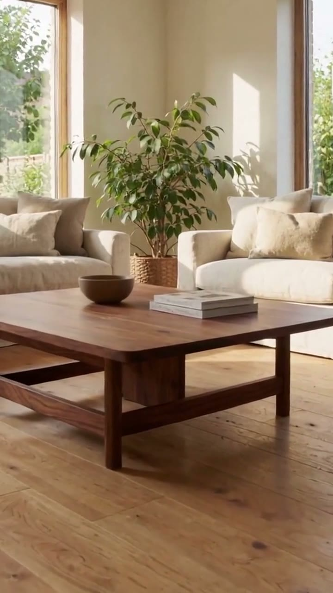

Architecture grad and operations manager, turned video producer.
Reels, carousels and a full calendar for your studio. I model and render buildings myself, so I know which frame of a visualization is worth posting.



Design work, turned into content
Visualizations, walkthroughs and site footage, cut for social.
A carousel from one render
Restaurant 101, my own fine-dining concept. Four frames pulled from the walkthrough and laid out as an Instagram carousel.


A museum walkthrough
Museo del Galeón. A full-size galleon inside a museum hall, then the galleries around it. Modelled in SketchUp and rendered in D5 Render.
My own visualizations
Drafted in AutoCAD and SketchUp, rendered in Lumion and D5 Render, then cut and published on my own channel. No AI.
Project and site footage
Capita Design & Build. Handover and site films I shot and edited, used on the firm's website and Google Business profile.
Reels and Shorts
Hook first, tight cuts, captions and sound design.

Baytree Cars · 2.2M viewsThis or That: Ferrari edition
George Cordon · ReelGlobal e-commerce in 2026
George Cordon · ShortMost jobs stop paying
George Cordon · ShortOrganic content isn't enoughRaw to final
What I was handed is on the left. What I delivered is on the right.
AI creative tools
For the days there is nothing new to film.

AI-generatedOne house in six shots
AI-generatedA home that isn't built yetA still render becomes a moving shot, one image becomes five angles, and a Reel can go out between project launches. I generate on my own RTX 4090 and with Higgsfield.
I studied buildings before I cut video.
Junior architect, then 3D visualizer, then property technical officer. So the work can go beyond marketing: visualization, drawings and technical coordination when the studio needs a hand.
- Material and light first, logo last.
- The hero frame of a render opens the Reel.
- The founder's page and the studio's page get different cuts.
- One project becomes a Reel, a carousel, a LinkedIn post and pins.
Accounts I've worked on
Open any of them.
- Baytree Cars (opens YouTube in a new tab)
UK supercar dealer · I ran short-form in 2024
Flat channel to 4.6M views in the year. Two shorts at 2.5M and 2.2M, still its two most viewed.
- George Cordon (opens YouTube in a new tab)
Ecommerce YouTube · editor, 2026
Every long-form episode of the year, plus the channel's Shorts and Instagram Reels.
- Nlmino (opens YouTube in a new tab)
My own architecture channel
Design, render, edit and upload. One walkthrough reached 23K views with no promotion.
How I'd run your channels
15 to 18 hours a week, managed by me.
Paid trial
One project, one week of posts
Send one finished project. I cut the Reels, design a carousel and write the captions.
First two weeks
Content bank and calendar
I sort your renders, animations and site footage into a month of planned posts.
Every week
Edit, schedule, publish, report
Posts go out on time, and you get a short note on what worked and what I'd try next.
One project, four platforms
Each launch- A Reel and a carousel, for the studio and the founder
- YouTube
- The Reel as a Short, retitled for search
- The stills with a post written for clients and developers
- Vertical stills pinned to the project page
Tools
- Editing
- Premiere Pro, DaVinci Resolve, After Effects, CapCut
- Design
- Photoshop, Illustrator, Canva
- 3D and rendering
- AutoCAD, SketchUp, Lumion, D5 Render
- AI
- ComfyUI on my own RTX 4090, Higgsfield, Claude and ChatGPT for scripts and captions
- Scheduling
- Meta Business Suite, YouTube Studio
Send me one project folder. I'll send back a week of posts.
Contracts and payments go through Upwork.